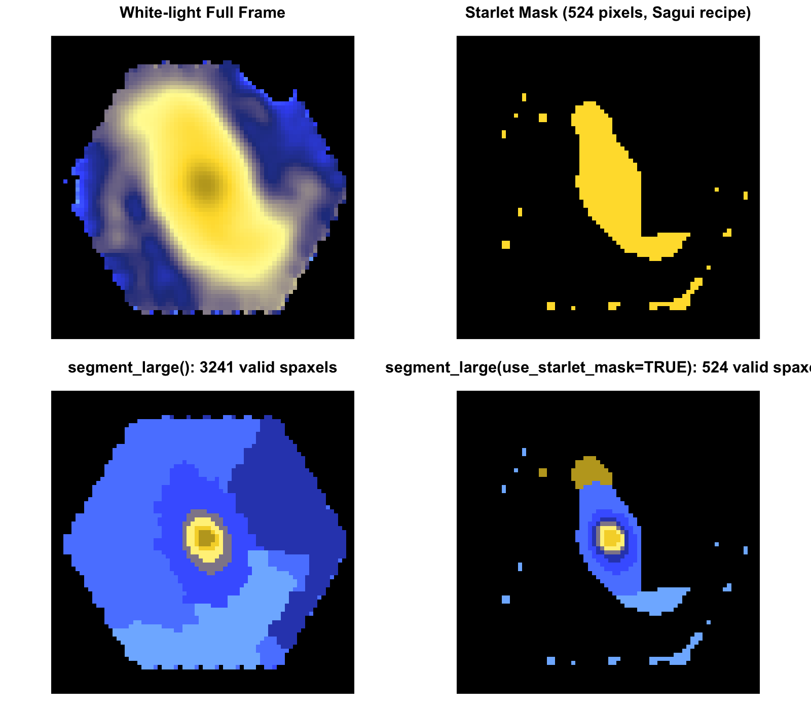
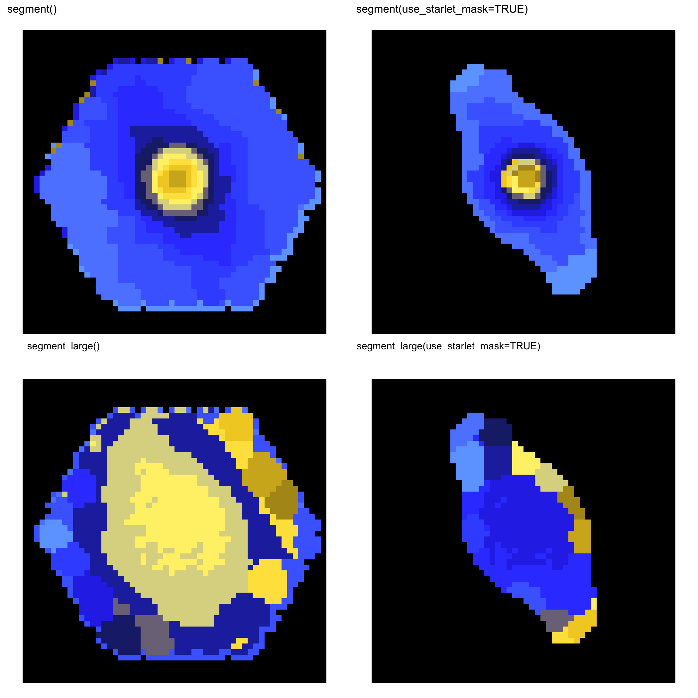

Capivara


Spectral segmentation and morphology-aware decomposition for astronomical data cubes.
Capivara defines spatial regions directly from IFU spectra. It keeps the core workflow intentionally focused: build a scientifically meaningful support mask, cluster spectra into coherent regions, and export flux-preserving regional spectra for downstream analysis.

Exact segmentation
segment() implements the standard Ward workflow and supports missing spectral channels.
Large cubes
segment_large() uses a sparse-Ward backend to avoid the all-pairs distance matrix that makes exact Ward explode in RAM.
Starlet support
Sagui-style white-light starlet masks preserve diffuse galaxy structure while reducing background contamination.
Flux-preserving outputs
Region maps and summed spectra are designed for spectral fitting and physical property estimation.
Installation
Optional GPU acceleration:
torch is optional. Capivara falls back to base R distance calculations when it is not installed.
Minimal workflow
library(capivara)
library(FITSio)
x <- FITSio::readFITS("manga-8140-12703-LOGCUBE.fits")
seg <- segment_large(
input = x,
Ncomp = 25,
use_starlet_mask = TRUE,
starlet_J = 5,
starlet_scales = 2:5,
knn_k = 100
)
print(seg$backend_info)
print(table(seg$cluster_map, useNA = "ifany"))
plot_cluster(seg)
spectra <- summarize_cluster_spectra(seg)
sum_spectra <- spectra$sum_spectra
median_spectra <- spectra$median_spectra
print(head(sum_spectra))
write.csv(sum_spectra, "capivara_sum_spectra.csv", row.names = FALSE)
saveRDS(seg, "capivara_segmentation.rds")Use the summed spectra for flux-preserving science products and the median spectra for robust visual inspection. use_starlet_mask = TRUE turns on the foreground-support mask; use_starlet_mask = FALSE runs on all valid spaxels. There is no separate starlet segmentation entry point.
To segment only on a spectral window, for example around an emission-line complex, use feature_wavelength_range. The binning is learned from that window, but the returned original_cube remains the full cube, so summarize_cluster_spectra() still exports full flux-preserving spectra.
When using target_snr, wavelength_range has a different role: it selects the spectral interval used to evaluate the SNR screen. This keeps line-focused segmentation and SNR quality control independent.
Plotting and saving the segmentation map
Both segment() and segment_large() return the spatial binning scheme in seg$cluster_map. This is a 2-D matrix with the same spatial footprint as the input cube. Pixels outside the support mask are stored as NA; for DS9 and most FITS-based workflows it is usually clearer to write those pixels as 0 and keep the Capivara regions as positive integer labels.
plot_cluster(seg)
cluster_map <- seg$cluster_map
# DS9-friendly convention:
# 0 = outside the Capivara support / unassigned background
# >0 = Capivara region id
cluster_map_fits <- cluster_map
cluster_map_fits[is.na(cluster_map_fits)] <- 0L
storage.mode(cluster_map_fits) <- "integer"
FITSio::writeFITSim(
cluster_map_fits,
file = "capivara_segmentation_map.fits",
c1 = "Capivara segmentation map: 0=background, positive integers=regions"
)If you want to preserve the spatial WCS from the original cube, reuse the first two axes from the input FITS object when they are available:
spatial_ax <- NA
if (!is.null(seg$axDat) && is.data.frame(seg$axDat) && nrow(seg$axDat) >= 2) {
spatial_ax <- seg$axDat[1:2, , drop = FALSE]
}
FITSio::writeFITSim(
cluster_map_fits,
file = "capivara_segmentation_map_wcs.fits",
axDat = spatial_ax,
header = seg$header,
c1 = "Capivara segmentation map: 0=background, positive integers=regions"
)The saved FITS image contains the bin number at each spatial pixel. It is the same binning scheme used by summarize_cluster_spectra(), so region k in the FITS map corresponds to row/bin k in the exported summed or median spectra.
Large cubes
The standard Ward workflow is exact, but it stores all pairwise distances. For large cubes, memory grows quadratically with the number of valid pixels.
When the exact backend is too expensive in RAM, use the sparse-Ward backend:
segment_large() mirrors the output structure of segment() while avoiding the full all-pairs distance matrix. Its default validity screen follows Sagui’s sparse-Ward backend for coherent kNN graphs. Increasing knn_k makes the graph denser and usually closer to exact Ward; knn_k = 100 is a good visual/science starting point for MaNGA- or JPAS-style examples.
Starlet support masks
Capivara can build a Sagui-style white-light starlet support before clustering. The mask is computed on the full spatial footprint and then applied back to the cube.
Experimental structural diagnostics
Capivara also includes experimental structural diagnostics that can be used before structure-aware segmentation. These tools are intentionally conservative: they return continuous score maps, profile-model supports, and diagnostic masks, rather than claiming a fully validated morphological classification.
For example, detect_bar() follows the standard GALFIT-style idea that bars are well represented by a modified Ferrer profile: a relatively flat inner component with a truncated outer radius. Capivara does not run GALFIT, but it fits a small modified-Ferrer envelope to the starlet/ridge structural evidence profile along the candidate bar axis. The returned diagnostics include ellipticity, position-angle scatter, Ferrer outer radius, Ferrer shape parameters, model support, and confidence. The returned candidate_mask is the thresholded evidence map, while bar_mask is a filled Ferrer-supported elongated support by default; this avoids introducing artificial holes through barred structures.
The hard flag bar$bar_like is deliberately strict. For science use, inspect bar$bar_score, bar$bar_mask, bar$radial_profile, and bar$diagnostics$ferrer_supported rather than relying only on the logical flag.
Annular supports should be treated separately. detect_ring() intentionally builds a support with the compact central component excluded, so it is useful for ring or partial-ring hypotheses but should not be used as an alternative label for a barred galaxy.
The current structural layer is model-led by design: modified Ferrer profiles for bars, annular/truncated profiles for rings, and future log-spiral or power-tanh supports for spiral arms. The segmentation step then runs inside the selected support via segment_structures().
Core API
Capivara keeps the public segmentation API small:
segment()is the standard exact Ward segmentation.segment_large()is the memory-safe sparse-Ward segmentation.use_starlet_mask = TRUE/FALSEcontrols whether either backend applies a starlet foreground support before clustering.estimate_segment_memory()estimates the exact Ward memory lower bound.summarize_cluster_spectra()exports region spectra.reconstruct_cluster_cube()builds representative reconstructed cubes.reconstruct_flux_preserving_cube()builds flux-preserving model cubes for fitting workflows.
Companion packages
Capivara is the segmentation layer. Companion packages can consume the same region maps and summed spectra:
capivaraPPXF: pPXF-based stellar populations, stellar/gas kinematics, emission-line measurements, and BPT-style diagnostics.sagui: photometric segmentation and regional SED extraction.saguiSED: SED fitting for Sagui regional photometry.
This separation keeps Capivara installable and focused while still allowing a complete analysis workflow.
Visual example
This panel shows the exact and scalable segmentation APIs with and without the starlet support mask.

Citation
If you use Capivara in your research, please cite:
@article{desouza2025capivara,
author = {de Souza, Rafael S. and Dahmer-Hahn, Luis G. and Shen, Shiyin and Chies-Santos, Ana L. and Chen, Mi and Rahna, P. T. and Ye, Renhao and Tahmasebzade, Behzad},
title = {CAPIVARA: a spectral-based segmentation method for IFU data cubes},
journal = {Monthly Notices of the Royal Astronomical Society},
year = {2025},
volume = {539},
number = {4},
pages = {3166--3179},
doi = {10.1093/mnras/staf688}
}Scope
Capivara focuses on:
- IFU/hyperspectral segmentation
- starlet-based support masks
- exact and sparse-Ward spectral clustering
- missing-data-safe cube handling
- flux-preserving regional spectra
- clean handoff to fitting packages such as
capivaraPPXF